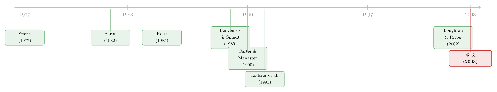

折价，是发行人替「最后一分钟」付的一笔信息费
本文读的是 Altınkılıç & Hansen (2003, JFE)：增发新股的「折价」并不是承销商随手压的价，而是一笔可以被市场提前预见、并在发行公告日就被股价吸收的成本；真正搅动行情的，是折价里那一点「意料之外」——它泄露了主承销商在临门一脚时握有、而其他人看不到的信息。
1 一个被忽略的 26 亿美元
先说一个很多人没太当回事的数字。
1990 年代，美国上市公司做 增发 (seasoned equity offering, SEO) 时，平均要把发行价定得比前一天的收盘价低 3.2%。这个数字单看不大，但它经常超过整个承销团佣金的一半，加总起来，是超过 26 亿美元 的一笔钱——白白从老股东兜里流出去的钱。
这就是 折价 (discounting)：把前一天收盘价对发行价取对数比值。它在 1990 年代变得稀松平常，量级也远大于早年。可奇怪的是，关于「为什么要折价」，文献里给出的解释既少又几乎没被检验过。
于是一个很自然的问题冒出来：这 3.2% 到底是什么？是承销商占了发行人的便宜，是市场对不确定性的补偿，还是某种我们没看懂的信息机制？
这篇论文的全部故事，就是把这一个看似简单的折价，拆成两半，然后让数据替每一半说话。
2 一道会计恒等式，把问题劈成两半
作者干的第一件事，朴素得近乎狡猾：他们写下了一个恒等式。
定义三个量，全部取对数比值：折价 D 是前一天收盘价 p_{-1} 比发行价 p_0；抑价 (underpricing) U 是发行当日收盘价 p_1 比发行价 p_0；发行日收益 (offer-day return) R 是发行当日收盘价比前一天收盘价。
从这个恒等式出发：
$$ \frac{p_1}{p_0} = \left(\frac{p_{-1}}{p_0}\right)\left(\frac{p_1}{p_{-1}}\right) $$
两边取对数，就得到全文的「主梁」：
这条恒等式为什么是关键一步？因为它把一个在 IPO 里看不清的东西，在 SEO 里看清楚了。
在不增发的新股（IPO）里，你看不到「发行前一天的收盘价」——公司还没上市，没有市价。所以 IPO 研究者只能盯着抑价 U。但在 SEO 里，公司本来就在交易，p_{-1} 是现成的，于是折价 D 和发行日收益 R 都能被单独观测到。
接着，作者再把折价 D 本身劈成两段：
- 预期折价 (expected discounting)：在发行前一天收盘时就能被预测出来的那部分；
- 第十一小时的意外 (eleventh-hour surprise)：发行价正式公布的那一刻才揭晓的惊喜。
如果发行当日预期收益为零，那么由恒等式立刻有 E[U] = E[D]——预期抑价就等于预期折价。这意味着：几十年来研究 IPO 抑价积累的全部经验，可以直接搬过来解释 SEO 的折价。 这正是作者的杠杆所在。
3 预期折价：可以被预见，就会被定价
先看可预测的那一半。
由于折价的分布几乎被截断在 0%、且严重右偏（偏度 2.14，超过四分之三的发行有折价，但也有大量发行根本不折价），普通最小二乘会出问题，作者用了 Tobit 回归 (Tobit regression)——这和 IPO 抑价里把负抑价归零、用 Tobit 处理的做法一脉相承。
模型里放了六个从 IPO 抑价文献里搬来的变量，结果干净得惊人，每一个都高度显著：
- 股票收益波动率越高，折价越大；
- 股票挂在 Nasdaq 上，折价更大（Nasdaq 增发的平均折价
3.01%，NYSE/Amex 只有1.47%）； - 股价越高，折价越小（用发行前五天市价的倒数作代理）；
- 主承销商声誉越高（Carter–Manaster 排名），折价越小。
更妙的是发行规模的效应：预期折价对募资额呈 U 形。保持相对规模不变、绝对募资额上升时，折价下降；保持绝对额不变、相对规模（相对于发行人市值）上升时，折价上升。直觉是：相对盘子越大，逆向选择和「卖压」越重，越得靠折价来招徕资金。
这些规律和 IPO 抑价模型里的故事完全对得上——它们刻画的，无非是公司价值的不确定性与把股票推销出去的努力。
那么，市场会不会提前算这笔账？会。这正是这篇论文顺手解决的一个老问题：投资者究竟会不会在增发公告日就预期到将来的折价稀释成本？作者发现，融资公告的股价反应，在预测折价越大时越负。也就是说，理性的老股东早就把这笔预期的稀释成本，写进了公告日的股价里。预期折价，名副其实地「预期」。
这也顺带回答了「为什么 1990 年代折价变得这么普遍」。答案不是单笔折价变狠了——折价幅度十年里一直在 3.2% 附近横着；而是用折价的公司变多了（每年折价占比从 70% 稳步升到 86%），叠加发行公司本身的不确定性上升。频率，而非力度。
关于增发里这种「为推销而付费」的逻辑，本博客另有一篇可对照阅读：《多花一笔钱买「需求」：增发时，企业为什么宁愿请投行去吆喝》。
4 真正的反转：那点「意外」在说话
可预测的部分讲完了，故事到这里只是平淡。真正关键的一步，在于折价里不可预测的那部分——第十一小时的意外。
这个意外，可能只是承销商最后一分钟随手的价格微调（那就是纯噪声）；但它也可能释放了主承销商手里独有的信息。怎么区分？看发行当日的股价。
如果意外只是噪声，发行日不该有异常波动。可数据显示：发行日的收益标准差是 4.7%,比它在之前五个交易日的均值 3.2% 高出 50%、比之后五个交易日的 2.3% 高出整整一倍。具体到个股：发行人有五分之一的概率当天异常上涨 1.2%，也有差不多的概率异常下跌 3.1%。这些剧烈的重估往往超过承销商的全部报酬——而且只发生在发行日当天，不在前后。
于是结论很清楚：第十一小时的意外，是带信息的。
接下来是全文最精彩的检验。作者去测发行日异常收益对折价意外的敏感度 (sensitivity)——意外多折价 1%，股价异常反应几个百分点？不同的「故事」给出截然不同的预言：
- 配售成本 (placement cost) 故事：临门折价只是在弥合「昨日收盘价」与「最终订单簿隐含价」之间的缺口、补偿额外的流动性成本。预测折价变动大于收益变动 → 敏感度为负、但高于 −1。
- 信息获取 (information acquisition) 故事（Benveniste & Spindt, 1989）：临门折价是用来购买更好信息的，收益变动大于折价变动 → 敏感度低于 −1，且只在好消息时如此。
- 租金攫取 (rent expropriation) 故事（Loughran & Ritter, 2002）：银行用折价为自己（或关系户）攫取价值，无论消息好坏都该 → 敏感度低于 −1。
数据给出的答案是：意外多折价 1.0%，对应股价异常下跌 0.62%。敏感度约 −0.62，高于 −1。
这个数字一锤定音：它支持配售成本故事，否决了租金攫取故事。它表面上与信息获取故事矛盾，但作者进一步发现，当发行日是好消息时，敏感度更负一些（仍高于 −1）。综合起来，配售成本是临门折价的主要用途，临门的信息收集只是次要角色。
把镜头拉回到注册期（从备案日到发行前一日）的信息释放，证据互相印证：预期折价随注册期内更多正面私有信息的释放而上升（吻合信息获取成本故事）；也随更多负面信息释放而上升（吻合价值不确定与配售成本故事）；但与公开信息无显著关系——无论好坏。这最后一点尤其重要：它直接打脸「银行趁公司升值时用折价攫取租金」的说法。
至此，一个连贯的图景浮现：主承销商在最后一刻，确实握有别人没有的信息——主要是市价与订单簿隐含价之间的落差。而它用折价当作一个「信息更新机制」，在资金提供方掏钱之前把这点压箱底的信息如实告诉他们。换句话说，警觉的资金方逼着银行做出公允的定价调整，银行照办——这与「认证假说」(Booth & Smith, 1986; Smith, 1986) 里银行靠信誉立身的逻辑严丝合缝。
5 文献脉络
这条线的源头，是一连串关于「新股为什么要被低价发行」的经典追问。
最早，Smith (1977) 比较了配股与承销发行的成本；Baron (1982) 把投行的信息优势写进了一个委托代理模型。真正的转折是 Rock (1985) 的逆向选择故事——给信息劣势的投资者以抑价作补偿；随后 Benveniste & Spindt (1989) 提出投行用深度抑价的配售去向知情投资者「买信息」，开创了信息获取这一支。与此同时，Booth & Smith (1986)、Smith (1986) 把投行的角色锚定在认证上，Carter & Manaster (1990) 则把承销商声誉做成了可度量的变量。
在 SEO 这一侧，Loderer, Sheehan & Kadlec (1991) 早就记录了增发折价的截断分布。而 Loughran & Ritter (2002) 的租金攫取视角，给「为什么发行人不在乎把钱留在桌上」提供了一个行为解释。

这篇论文的位置，恰在这两条河的交汇处：它借用 IPO 抑价的全部工具箱去解剖 SEO 折价，又利用 SEO「看得见前一日收盘价」的独特优势，把 IPO 里永远观测不到的「折价 vs 发行日收益」分离出来，从而第一次直接检验了这几个相互竞争的故事。和它同期、同样在追问「新股定价是否有效率」的研究，可参见本博客对 Lowry & Schwert 的评述：《新股定价，到底「有没有效率」？》。
6 数据
样本来自 Securities Data Company 的全球新发行库（1998 年 4 月版），叠加 CRSP（价格、成交量、收益、SIC）、TAQ（买卖报价）、13F（机构持股）。承销商声誉用 Carter & Manaster (1990) 排名、Carter et al. (1998) 更新。
- 观测单位：单笔增发。
- 样本期：1990–1997 年。
- 筛选：firm-underwritten、有承销团、非架上发行 (nonshelf)、上市工业企业（剔除 SIC 400 段公用事业、600 段金融），剔除单位发行与含权证发行，剔除募资低于
$10 million的小单。 - 样本量：
1,703笔。约三分之二（65%）是 Nasdaq 公司；平均募资$85.9 million（中位$57.12 million），占在外股本21.7%。
一个值得一提的细节：SDC 报告的发行日期超过一半是错的（SEC 常在收盘后宣布生效，SDC 就记成当天，而发行其实发生在次日）。作者用 Dow Jones 新闻库的报道日期、辅以 Safieddine & Wilhelm (1996) 的「发行日成交量暴增」法重新定位发行日——两法对 98% 的样本一致。这种对「哪一天才是发行日」的偏执，正是全篇识别能站得住的地基。
7 评论与延伸（Q&A + 研究方向）
(a) 几个可能的疑问
Q：折价（discounting）和抑价（underpricing）到底差在哪？
抑价
U是发行价相对发行当日收盘价的折让，折价D是发行价相对前一日收盘价的折让，两者差的正是发行日收益R，即U = D + R。在 IPO 里看不到前一日市价，只能谈抑价；SEO 里两者都能观测，这正是本文方法论的命门。
Q：把折价拆成「预期 + 意外」，会不会只是事后的数学游戏？
不是。预期部分用发行前已知的信息（波动率、股价、声誉、规模）做 Tobit 拟合，每个系数都高度显著且方向符合理论；意外部分则被发行日异常且仅限当天的大波动所证实——若意外纯属噪声，发行日就不该有超出前后五日的波动。两半都各自有独立的经验内容。
Q：敏感度 −0.62 这一个数字，凭什么能否决「租金攫取」？
因为各故事的预言是定量分叉的：租金攫取要求敏感度低于 −1（收益变动大于折价变动，且不分消息好坏），而数据给出的是高于 −1 的
−0.62，且只有在好消息时才更负一点。落点不在租金攫取预测的区间里，这就是拒绝它的依据。
Q：怎么知道是「主承销商」而非「公司管理层」握有那点临门信息？
作者承认管理层信号假说在理论上也成立，但后续结果（折价与公开信息无关、不随公司价值升值而系统加大、也不像是早先期攒下来的信息）更像是银行基于订单簿与市价落差的实时信息，而非管理层在用折价发「我被低估了」的信号。
Q：1990 年代折价为什么变多——是银行更贪了吗？
不是力度问题。折价的幅度十年里稳定在
3.2%上下，变的是使用频率（折价占比从 70% 升到 86%）和发行公司本身不确定性的上升。是更多公司在用折价，而非每笔折得更狠。
Q：发行日平均收益只有 −0.03%，是不是说明折价其实没造成什么损失？
恰恰相反。平均接近零，是因为理性投资者在发行日前就公允地给公司定了价（公告日股价已吸收预期折价）；但发行日的波动极大（标准差
4.7%，五分之一的概率异常涨 1.2% 或跌 3.1%）。损失体现在折价的稀释与发行日的巨大不确定性上，而不在那个被平均掉的均值里。
(b) 几个可能的研究问题与提案
1. 把同一套「折价 = 预期 + 意外」框架搬到公司债增发上。
【经济故事】公司债一级发行同样存在「新债折价」(new-issue concession) 与承销商的临门定价。债与股的信息环境不同（债的下行更被关注），配售成本故事在信用市场可能更强。 【可行性】中。需要 TRACE 的二级成交价 + Mergent FISD 的发行条款来构造「发行价 vs 临近市价」的折让；难点在于债缺乏连续可比市价，需用同发行人在外券的收益率做代理。识别上可借用本文的注册期信息释放设计。可对照《新债上市第一笔成交，凭什么白赚 47 个基点？》。
2. 外资持有人结构是否改变临门折价的敏感度？
【经济故事】若资金提供方中机构/外资占比更高，他们对公允定价的「警觉」更强，可能压低折价、或让敏感度更接近配售成本所预测的区间。 【可行性】中。13F 与跨境持股数据可得；难点是把「订单簿构成」与公开持股结构对应起来——订单簿不可观测，只能用发行后的持有变化反推，识别偏弱。
3. 架上发行 (shelf) vs 传统增发的折价机制差异。
【经济故事】本文刻意剔除了架上发行。架上发行的「临门」窗口被压缩，信息更新机制可能被削弱，折价的意外成分应更小。 【可行性】高。Denis (1991) 已记录架上与非架上的差异，数据来源同本文，只需放回被剔除的样本做对照。是一个干净、低成本的延伸。
4. 用更细的盘口数据直接检验「订单簿落差」假说。
【经济故事】本文只能间接推断银行握有「市价 vs 订单簿隐含价」的落差。若能拿到真实的指示性订单（如某些市场的 bookbuilding 记录），就能直接验证折价意外是否正比于这一落差。 【可行性】低到中。订单簿数据极难获取（Cornelli & Goldreich, 2001 用过欧洲 IPO 簿）；一旦拿到，识别力极强，但数据可得性是硬约束。
8 参考文献
- Altınkılıç, O., Hansen, R.S. (2003). Discounting and underpricing in seasoned equity offers. Journal of Financial Economics 69(2), 285–323.
- Baron, D.P. (1982). A model of the demand for investment banking advising and distribution services for new issues. Journal of Finance 37(4), 955–976.
- Benveniste, L., Spindt, P. (1989). How investment bankers determine the offer price and allocation in initial public offerings. Journal of Financial Economics 24(2), 343–361.
- Booth, J.R., Smith, R.L. (1986). Capital raising, underwriting, and the certification hypothesis. Journal of Financial Economics 15(1–2), 261–281.
- Carter, R.F., Manaster, S. (1990). Initial public offerings and underwriter reputation. Journal of Finance 45(4), 1045–1067.
- Cornelli, F., Goldreich, D. (2001). Bookbuilding and strategic allocation. Journal of Finance 56(6), 2337–2369.
- Loderer, C., Sheehan, D., Kadlec, G. (1991). The pricing of seasoned public offerings. Journal of Financial Economics 29(1), 34–58.
- Loughran, T., Ritter, J.R. (2002). Why don't issuers get upset about leaving money on the table in IPOs? Review of Financial Studies 15(2), 413–443.
- Rock, K. (1985). Why new issues are underpriced? Journal of Financial Economics 15(1–2), 187–212.
- Smith, C.W. (1977). Alternative methods for raising capital: rights versus underwritten offerings. Journal of Financial Economics 5(3), 273–307.
- Smith, C.W. Jr. (1986). Investment banking and the capital acquisition process. Journal of Financial Economics 15(1–2), 3–29.